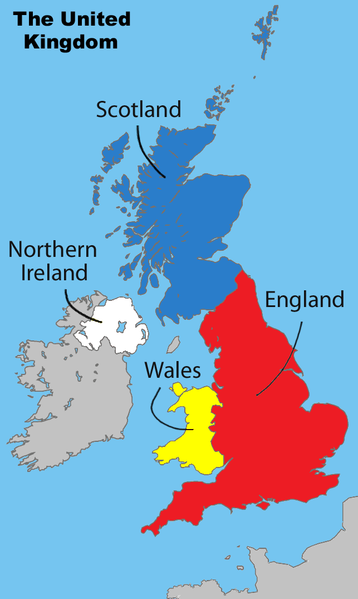
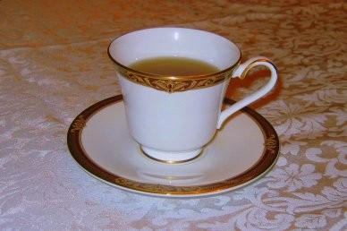

Jungtinė Karalystė
Istorijos ir modernumo derinys, kur klasika susitinka su šiuolaikiniu gyvenimu!
Istorijos ir modernumo derinys, kur klasika susitinka su šiuolaikiniu gyvenimu!
Arbata britams - tai ne tik gėrimas, bet ir raminanti tradicija, kuri sukuria jaukią ir atpalaiduojančią atmosferą, padedančią lengviau vesti rimtus pokalbius. Ruošiant arbatą, natūraliai atsiranda pauzė, leidžianti susikaupti ir apmąstyti mintis. Britų kultūroje arbatos siūlymas tapo socialine norma, kuri sustiprina svetingumo ir saugumo jausmą pokalbiuose.
Britai tiesiog dievina stovėti eilėse - tai jų savotiška tradicija! Eilių kultūra gimė dar pramonės revoliucijos ir Pasaulinių karų laikais, kai tvarka tapo būtinybe. Laukimas virto ne tik kasdienybe, bet ir bendruomeniškumo ženklu, o taisyklių laikymasis - britų sąžiningumo įsikūnijimu. Eilės tapo tarsi neoficialiu ritualu, kuriame kiekvienas žino savo vietą ir laukia su stulbinamu kantrumu. Štai kelios pagrindinės taisyklės, kurių laikosi beveik visi britai:
1. Niekada neužlindinėti
2. Gerbti šalia esančius žmones
3. Nepalikti per didelio tarpo
4. Mandagiai sustabdyti tuos, kurie užlindo

Britai tiesiog negali sau leisti nepalaikyti silpnesniųjų! Nesvarbu, ar tai lėčiausias bėgikas, ar nepopuliariausias konkurso dalyvis - jei šansai prieš jį, britai būtinai užjaučia ir palaiko. Kuklumas čia vertinamas, tad tie, kuriems sekasi prasčiau, neretai sulaukia didžiausios simpatijos. Tai ypač matyti sporto renginiuose ar žaidimų šou, kur net netikėčiausias pašalietis gali tapti publikos numylėtiniu!
.png)
Dažnai sakoma, kad oras Jungtinėje Karalystėje yra „kintantis“, nes jis nuolat keičiasi. Diena gali prasidėti su saule, po pietų gali pradėti lyti, o vakare gali pasitaikyti pilkų debesų. Todėl oras yra nuolatinė tema, apie kurią britai kalba visą dieną. Tai puiki pokalbių tema su bet kuo - tiek su draugu, tiek su nepažįstamu žmogumi. Britams ši tema niekada nenusibosta.

Tipiškas pavyzdys - metro. Jei kas nors užmynė ant kojos, tikėtina, kad jie pasakys „atsiprašau“, tačiau ir jūs dažnai atsiprašykite už tai, kad buvote jiems kelyje! Britai „atsiprašau“ sako ne tik tada, kai nori kažko atsiprašyti, bet ir kai nori išreikšti nepasitenkinimą, pavyzdžiui, „Atsiprašau, mano kava šalta“, net jei tai nebuvo jų kaltė. Kitaip tariant, „atsiprašymas“ čia labai dažnas, tad nesistebėkite, jei tai išgirsite daugybę kartų.
Karališkoji šeima - tai britų didybė su šiek tiek blizgesio ir daugybe tradicijų! Jie yra ne tik simbolis, bet ir tarsi Jungtinės Karalystės veidas pasauliui: nuo pompastiškų paradų iki šypsenų prieš kameras. Karalius ar karalienė gali ir nevaldyti šalies, bet jų reikšmė tiesiog neįkainojama! Be jų nebūtų tų didingų vestuvių, įspūdingų gimtadienių ar net smagių pasakojimų apie jų kasdienį gyvenimą. Britams jie tiesiog nepakeičiami!
Jungtinėje Karalystėje vakarienė dažniausiai valgoma gana anksti - tarp 18 ir 20 valandos. Tai lemia darbo grafikai, šeimos tradicijos ir net mėgstamos televizijos laidos, kurios prasideda apie 19 valandą. Be to, manoma, kad ankstyva vakarienė naudinga sveikatai, todėl britai mieliau pasimėgauja maistu anksčiau. Taigi, kol kai kurios šalys dar tik ruošiasi vakarienei, britai jai įsitaisę ant sofos su arbatos puodeliu!

Burnso naktis, švenčiama sausio 25 d., pagerbia škotų poetą Robertą Burnsą su haggis, viskiu ir poezijos skaitymais.

Š v. Dovydo diena, švenčiama kovo 1 d., pagerbia Velso globėją paraduose, su narcizais ir tradicinėmis šventėmis.

Š v. Jurgio diena, švenčiama balandžio 23 d., pagerbia Anglijos globėją su vėliavomis, paradais ir tradicinėmis šventėmis.
Karaliaus Karolio III gimtadienis švenčiamas lapkričio 14 d., tačiau oficiali šventė su „Trooping the Colour“ parada vyksta jau birželį.

Atminimo diena, švenčiama lapkričio 11 d., pagerbia žuvusius kare karius tylos minute ir aguonų simbolika.
Š tai keletas dažnai naudojamų frazių Jungtinėje Karalystėje! Š ios frazės padės tau nepasimesti pokalbių metu. Tačiau šiomis frazėmis reikia naudotis atsargiai, nes, jei netyčia persistengsi, gali pasirodyti nemandagiai.
Reikšmė: Ar norėtum arbatos?
Panaudojimas: „It's been a long day. Fancy a cuppa?“
„Fancy a cuppa?“ paprastai naudojama, kai nori pasiūlyti arbatos svečiams arba pasidaryti pertrauką.
Patarimas! Jei ir iš tikrųjų nenori arbatos, mandagus atsisakymas gali vis tiek baigtis dar vienu pasiūlymu!
Reikšmė: Kaip tau sekasi? Viskas gerai?
Panaudojimas: „Alright, mate? How's your day been?“
Š is neformalus pasisveikinimas yra labai dažnas Jungtinėje Karalystėje, ypač tarp draugų.
Patarimas! Paprastas „Yeah, you?“ (Taip, tu?) yra įprastai laukiamas atsakymas.
Reikšmė: Išdykęs, šiek tiek nepagarbus, bet juokingas.
Panaudojimas: „Let's have a cheeky pint after work!“
Britai dažnai naudoja „cheeky“ kalbėdami apie mažus malonumus, kuriuos darai spontaniškai ar truputį „neteisėtai“!
Patarimas! Tai gali skambėti žavingai, kai naudojama lengva dvasia.
Reikšmė: Labai, be galo, prakeiktas.
Panaudojimas: „That was a bloody brilliant idea!“
Šis žodis naudojamas tiek teigiamoms, tiek neigiamoms emocijoms pabrėžti.
Patarimas! Nors „bloody“ nėra itin grubus žodis, kai kuriose situacijose jis gali skambėti šiek tiek nemandagiai!
Reikšmė: Gražus, mielas, nuostabus.
Panaudojimas: „She's such a lovely person.“
Šis žodis gali būti naudojamas apibūdinti ir žmones, ir situacijas ar net daiktus.
Patarimas! Britai mėgsta naudoti „lovely“ kaip mandagų ir šiltą atsakymą į pasiūlymus ar komplimentus, pavyzdžiui, „Fancy a cuppa?“ – „Oh, lovely!“.
Reikšmė: Draugas, bičiulis, partneris.
Panaudojimas: „Mate, what are you doing?“
Šis žodis dažniausiai vartojamas neformaliuose pokalbiuose tarp draugų ar pažįstamų.
Patarimas! Kai „mate“ sakomas griežtesniu tonu, jis gali reikšti ir susierzinimą ar net įspėjimą – tai priklauso nuo situacijos ir balso intonacijos.
Reikšmė: Visiška netiesa, nesąmonė.
Panaudojimas: „You think they'll win? That's rubbish!“
„Rubbish“ britų anglų kalboje vartojamas tiek tiesiogine prasme („šiukšlės“), tiek perkeltine, kai kažkas yra labai prastos kokybės ar neatitinka tikrovės.
Patarimas! „Rubbish“ skamba neformaliai ir šiek tiek įžeidžianti. Venkite šios frazės vartojimo rimtuose ar profesionaliuose pokalbiuose, tačiau kasdieniuose pokalbiuose jis gali būti naudojamas su humoru.
Reikšmė: Labai pavargęs, išsekęs.
Panaudojimas: „I'm absolutely knackered!“
Tai labai neformalus britiškas žodis, dažnai vartojamas kasdienėje kalboje.
Patarimas! Jį galima naudoti kasdieniame, draugiškame pokalbyje, bet venkite oficialiose situacijose.
Reikšmė: Tyčiojimasis iš kito draugiškai ir nepiktai.
Panaudojimas: „He's just taking the mickey.“
Tai neįžeidžianti frazė, tačiau viskas priklauso nuo tono – kartais ji gali reikšti ir rimtesnį erzinimą!
Patarimas! Stebėk savo toną! Ši frazė gali tapti įžeidžianti, jei kalbama pernelyg kritiškai.
Reikšmė: Nustebimas, šokas.
Panaudojimas: „Blimey, that's amazing!“
Šis žodis dažnai vartojamas emocingose situacijose ir skamba gana senamadiškai, bet vis dar populiarus!
Patarimas! Venkite šio žodžio, jei norite skambėti labai šiuolaikiškai.
Reikšmė: Štai taip paprasta / ir viskas padaryta.
Panaudojimas: „Just add the milk, and Bob's your uncle!“
Dažnai vartojama paaiškinant paprastą sprendimą ar instrukciją su humoristine nata!
Patarimas! Pasistenk nepritaikyti šios frazės rimtose situacijose.
Reikšmė: Nustebimas, šokas.
Panaudojimas: „Crikey, that's amazing!“
Š is žodis dažniausiai naudojamas draugiškai ar lengvai šokiruojančiose situacijose, dažnai su humoru.
Patarimas! Jis gali skambėti šiek tiek senamadiškai, todėl naudok jį atsargiai, kad nesukurtum pernelyg išskirtinio tono.
Reikšmė: Labai nusivylęs ar liūdnas.
Panaudojimas: „I was gutted when I missed the concert.“
Tai neformalus žodis, dažnai naudojamas kalbant apie pralaimėjimus ar nusivylimą.
Patarimas! Šis žodis gali būti per daug emocionalus rimtesnėse situacijose, todėl venk jo formaliose vietose.
Reikšmė: „eik tu sau!“, „negali būti!“
Panaudojimas: „On your bike, mate!“
Tai šiek tiek grubus, bet vis dar populiarus britų posakis, kurį naudoja norėdami paprašyti kažko išeiti arba eiti. Tai gali būti ir švelnus išsiskyrimo būdas, kai pasakyta su humoru.
Patarimas! Naudok šią frazę tik su draugais arba neformaliuose pokalbiuose, nes tai gali būti įžeidžiantis rimtesnėse situacijose.
Reikšmė: Atsisveikinimas, sudie.
Panaudojimas: „Cheerio, see you tomorrow!“
„Cheerio“ dažniausiai vartojama atsisveikinant ir dažniausiai naudojama su draugišku, lengvu tonu.
Patarimas! Tai šiek tiek senamadiškas išsireiškimas, tačiau vis dar vartojamas britų kalboje, ypač tarp vyresnių žmonių.


.jpg)

.jpg)


Štai keletas dalykų, kurių niekada nederėtumėte daryti, jei norite susilieti ir išvengti nepatogių situacijų. Vadovaukitės šiais patarimais, kad padarytumėte puikų įspūdį!
| Negalima: | Kodėl? | Ką daryti vietoj to: | |
|---|---|---|---|
| Vadinti JK „Anglija“ | JK sudaro Anglija, Š kotija, Velsas ir Š iaurės Airija. Vadinimas tik „Anglija“ gali įžeisti kitose dalyse gyvenančius žmones. | Vadink šią šalį JK arba įvardink konkrečią dalį. |  |
| Užstoti eskalatorius | Žmonės stovi vienoje pusėje (dažniausiai dešinėje) ir eina kita. Abiejų pusių užstatymas sulėtina važiavimą. | Stovėk teisingoje pusėje ir leisk žmonėms praeiti. |  |
| Atsisakyti puodelio arbatos | Arbata yra svarbi šios šalies kultūros dalis, ir atsisakymas gali atrodyti nemandagiai. | Priimk pasiūlymą arba mandagiai paaiškink, jei labai nenori arbatos. |  |
| Mėgdžioti britišką akcentą | Tai gali pasirodyti kaip pašaipa arba įžeidimas, nors ir netyčia. | Pripažink akcentą nemėgindamas mėgdžioti. | .svg.png) |
| Nesilaikyti eilių kultūros | Į eiles yra žiūrima labai rimtai, ir taisyklių nesilaikymas yra laikomas labai nemandagiu. | Visada sulauk savo eilės. |  |
| Nepaisyti pagrindinių manierų | Mandagumas yra labai vertinamas, ir jei pamiršti „prašau“ ar „ačiū“, gali pasirodyti nemandagus. | Visada pasakyk „prašau“ ir „ačiū“. |  |
| Juokauti apie Karališkąją šeimą | Karališkoji šeima yra labai gerbiama, ir juokeliai apie juos gali įžeisti žmones. | Venk juoktis iš jų, ypač viešoje vietoje. |  |